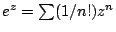
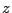

|
When -gram 2 filtration is used during sequence
comparisons, target sequences which do not share enough
-grams with the query sequence are
eliminated. BLAST uses such a method. The statistical problem
of evaluating the probability that 2 sequences share
 common -grams has
been studied in the uniform case by Rahmann and
Rivals [1,2].
common -grams has
been studied in the uniform case by Rahmann and
Rivals [1,2].
We give here results about the non-uniform case.
Our approach compares the statistics of the -gram sequence problem, where a -gram
at position  depends of the
depends of the  preceding positions of the sequence (dependant
model) and this of the -gram
independant model, where a -gram is drawn
at each position, independantly of the preceding positions. We
use for this last problem an urns and balls model; balls have
two possible colours, corresponding to the two sequences. We
give analytic results for the expectation and variance of
number of collisions in the independant model, and compare it
to results obtained by simulations, in both dependant and
independant models.
preceding positions of the sequence (dependant
model) and this of the -gram
independant model, where a -gram is drawn
at each position, independantly of the preceding positions. We
use for this last problem an urns and balls model; balls have
two possible colours, corresponding to the two sequences. We
give analytic results for the expectation and variance of
number of collisions in the independant model, and compare it
to results obtained by simulations, in both dependant and
independant models.
We consider an alphabet  of size
of size  , words of size
over this alphabet, and sequences of
length
, words of size
over this alphabet, and sequences of
length
 , corresponding to
, corresponding to
 -grams. There
are urns and we throw
-grams. There
are urns and we throw  balls of each colour in the urns. We are interested in
the number of urns with bicolour collisions (balls of each
colour are present in these urns).
balls of each colour in the urns. We are interested in
the number of urns with bicolour collisions (balls of each
colour are present in these urns).
Our counting tools are multivariate generating
functions. In the uniform case, the generating function of an urn
is
, where 
counts the number of balls of one colour. (There is only one
configuration of  balls of one colour in
one urn). When a second variable
balls of one colour in
one urn). When a second variable  counts
the balls of the second colour, the generating function for
one urn is
counts
the balls of the second colour, the generating function for
one urn is  . More generally, when
considering
. More generally, when
considering  independant urns with equal
probability and a parameter counting the
urns with no bicolour collisions, the generating function of
the system is
independant urns with equal
probability and a parameter counting the
urns with no bicolour collisions, the generating function of
the system is

![$\displaystyle \mu_n=m-\frac{[z^n t^n]\left.\dfrac{\partial F(z,t,u)}{\partial u}\right\vert _{u=1}\rule[-4mm]{0mm}{12mm}}{[z^n t^n]F(z,t,1)}.$](img21.png)


|
Figures 1 to 4 compare the theoretical results of the independant case with the simulations made for the independant and the dependant cases. This shows that the independant approximation is excellent for the expectation. (Similarly, the expectation of number of occurrences of words in random texts is independant of autocorrelation, in contrast with the standard deviation).
When considering the DNA alphabet, the letters
distribution of H. influenzae and 10-grams, we obtain
 and, for the simulations, 0.1514
(resp. 0.1503) in the independant (resp. dependant) model. We also
have
and, for the simulations, 0.1514
(resp. 0.1503) in the independant (resp. dependant) model. We also
have
 and for the simulations
0.3884 (resp. 0.5051). The total variation distance of the
distribution obtained by simulations (independant case) and a
Poisson of parameter 0.1523 is under
and for the simulations
0.3884 (resp. 0.5051). The total variation distance of the
distribution obtained by simulations (independant case) and a
Poisson of parameter 0.1523 is under  .
.
Future work includes theoretical studies of the dependant case.

|

|

|

|